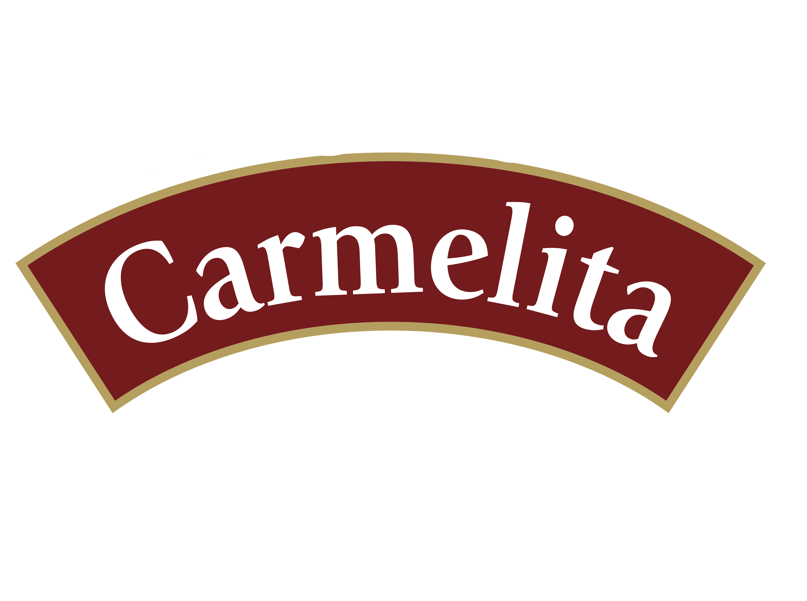

<!-- <p>navbar works!</p> -->
<div uk-sticky="sel-target: .uk-navbar-container; cls-active: uk-navbar-sticky">
    <mat-toolbar color="primary">
        <mat-toolbar-row>
            <button mat-button class="example-icon" [matMenuTriggerFor]="menu" aria-label="Example icon-button with a menu">
                <mat-icon>menu</mat-icon>
            </button>
            
                        <button mat-button>
                            <a href="https://usa.rompopecarmelita.com/" target="_blank">  </a>
                        </button>
        </mat-toolbar-row>
    </mat-toolbar>
    <mat-menu #menu="matMenu">
        <button mat-menu-item [routerLink]="['/']">Inicio</button>
        <button mat-menu-item [routerLink]="['/nosotros']">Nosotros</button>
        <button mat-menu-item [routerLink]="['/nuestro-ritual']">Ritual</button>
        <button mat-menu-item [routerLink]="['/nuestra-cocteleria']">Coctelería</button>
        <button mat-menu-item [routerLink]="['/nuestra-historia']">Historia</button>
    </mat-menu>
    
    
</div>
